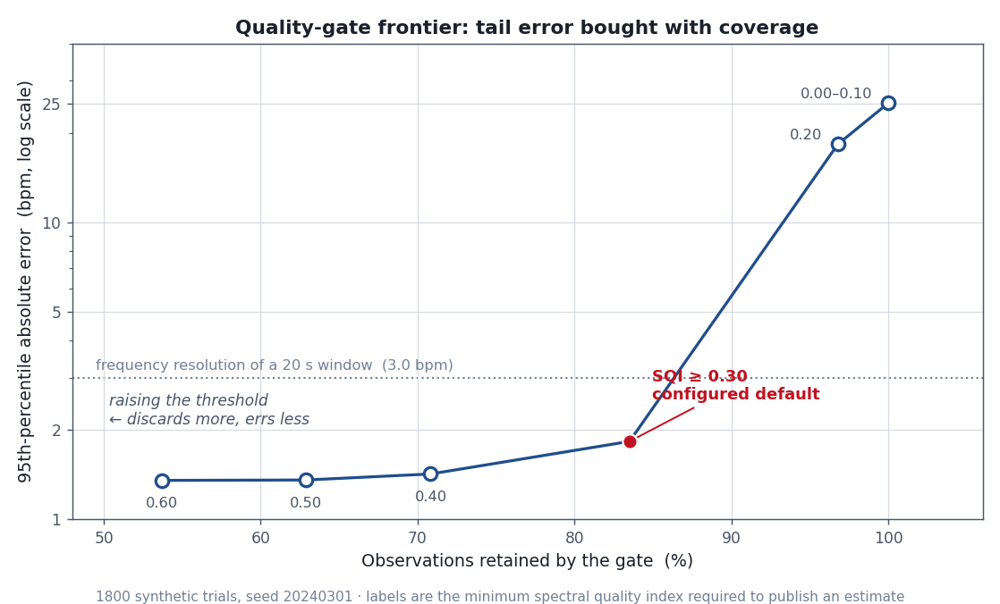

This page shows committed benchmark results against synthetic ground truth.
The live webcam dashboard needs a local camera and cannot run on GitHub Pages —
clone the repo and run
python main.py for that.
Headline numbers
Gate default
SQI ≥ 0.30
83.5% coverage retained
p95 error after gate
1.83 bpm
was 25.20 bpm ungated · 13.8× cut
RMSSD vs truth
r = 0.046
negative result · not usable
Quality-gate frontier

1,800 synthetic trials · seed 20240301 · 20 s window @ 30 fps · tolerance = frequency resolution of the window (3.0 bpm)
Frontier table
| min SQI | retained | MAE | RMSE | p95 |err| | within 3 bpm |
|---|---|---|---|---|---|
| 0.00 | 100.0% | 3.61 | 11.68 | 25.20 | 89.1% |
| 0.10 | 100.0% | 3.61 | 11.68 | 25.20 | 89.1% |
| 0.20 | 96.8% | 2.91 | 10.17 | 18.31 | 91.1% |
| 0.30 | 83.5% | 1.28 | 5.96 | 1.83 | 97.1% |
| 0.40 | 70.8% | 0.56 | 2.34 | 1.42 | 99.7% |
| 0.50 | 62.9% | 0.49 | 1.62 | 1.36 | 99.8% |
| 0.60 | 53.7% | 0.43 | 0.61 | 1.35 | 100.0% |